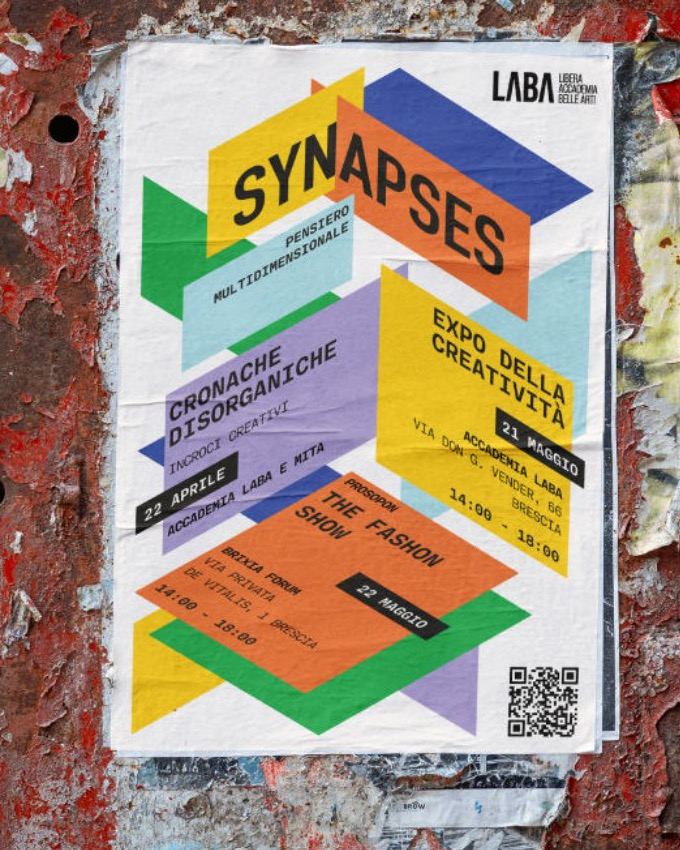
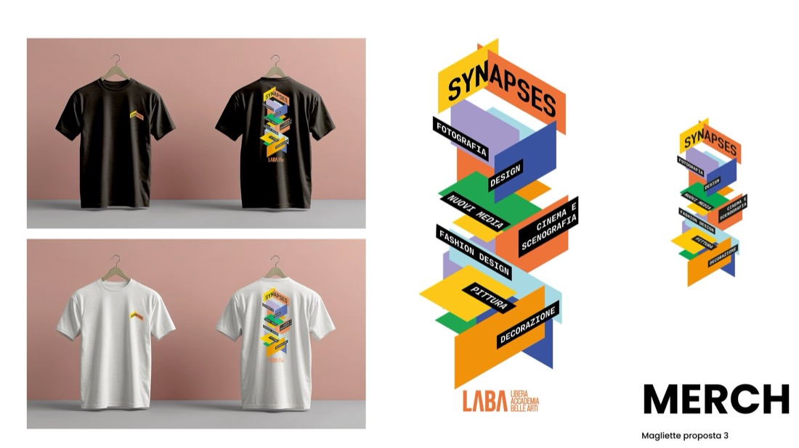
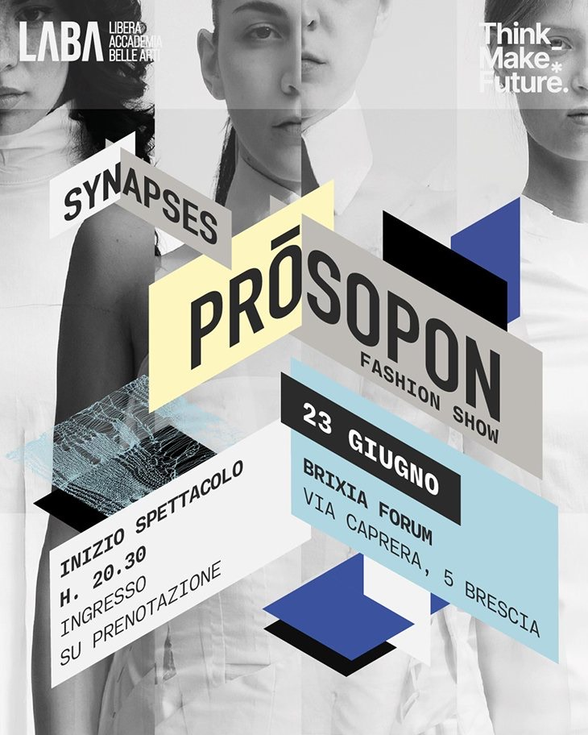
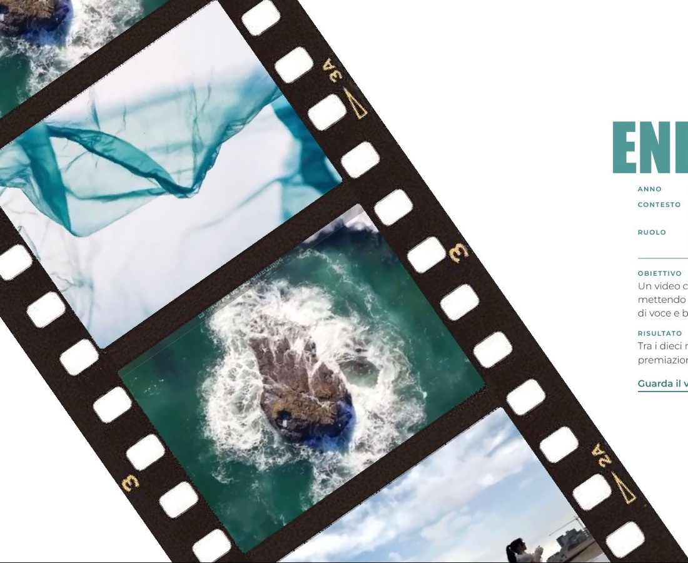
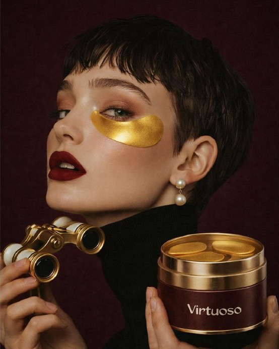
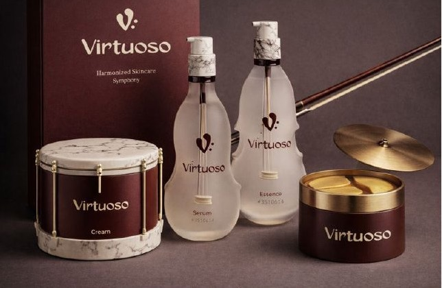

Landing page Imaze
- Anno
- 2026
- Contesto
- Incarico per Imaze Rent, studio di produzione visiva a Montecchio Maggiore (VI)
- Ruolo
- Progetto individuale: design e sviluppo
- Obiettivo
- Presentare lo studio e il set, accompagnando l'utente dalla scoperta dello spazio fino alla richiesta di prenotazione, con lo stile deciso del brand: font Safiro, fucsia, bianco e nero.
- Processo
- Ho esplorato tre direzioni visive con l'AI e il vibe coding, poi ho sviluppato e rifinito la pagina in HTML, CSS (Tailwind) e JavaScript.
- Risultato
- Una landing con sezioni su spazio, utilizzi, setup, team e FAQ, e un modulo per prenotare lo studio o l'attrezzatura.


Progetto Synapses
- Anno
- a.a. 2025/2026
- Contesto
- Corso di Art Direction, LABA Brescia
- Ruolo
- Lavoro di gruppo: art direction, poi team grafica e team merchandising
- Obiettivo
- Dare una nuova immagine a Synapses, l'evento culturale di LABA: un sistema visivo flessibile che rappresenti connessione, sperimentazione e multidisciplinarità, su supporti fisici e digitali.
- Processo
- Forme isometriche che si incastrano come le connessioni tra le discipline; esplorazioni per l'Expo della Creatività.
- Risultato
- Il progetto è stato adottato da LABA come identità ufficiale di Synapses 2026: sito, locandine, allestimenti, newsletter e merchandising.
Prōsopon, la sfilata
Per la sfilata il sistema doveva diventare più elegante: dai colori del festival a una palette fredda, con le foto delle modelle e le texture dei tessuti.







Progetto JU1CE
- Anno
- 2025
- Contesto
- Tesi di laurea triennale, IUSVE
- Ruolo
- Progetto individuale: concept, naming, brand identity, organizzazione e comunicazione
- Obiettivo
- Garantire alle donne una serata senza pericoli con un format di evento notturno accessibile solo a loro, e allo stesso tempo provocare: il fatto che serva un evento così è già il messaggio.
- Processo
- Schizzi a mano, poi il logo ridisegnato e un pattern di frutti; il cartone di succo con QR è sia sticker sia sottobicchiere.
- Risultato
- Brand identity, manifesti, flyer, sticker e sottobicchieri, con un piano di comunicazione online e offline tra marketing tradizionale e unconventional. Format progettato fino alla comunicazione, non realizzato.


Progetto EnergiaPura
- Anno
- a.a. 2022/2023
- Contesto
- Laboratorio IUSVE con brief reale di EnergiaPura, abbigliamento tecnico sportivo
- Ruolo
- Lavoro di gruppo: art direction, moodboard e storyboard; assistente a produzione, set e montaggio
- Obiettivo
- Un video che rendesse protagonista il processo di produzione dei capi, mettendo in luce sostenibilità e cura dell'ambiente, coerente con tono di voce e brand identity di EnergiaPura.
- Risultato
- Tra i dieci migliori lavori delle sedi IUSVE di Verona e Mestre. Alla premiazione con l'azienda il video ha vinto il premio Miglior Soggetto.

Progetto Virtuoso
- Anno
- a.a. 2025/2026
- Contesto
- Corso di Art Direction
- Ruolo
- Progetto individuale
- Obiettivo
- Sviluppare la direzione creativa di un prodotto ispirato a una passione personale: un brand di skincare che unisce la cura della pelle al mondo della musica.
- Processo e risultato
- Archetipo del brand, naming, moodboard, palette cromatica e font (Gunter, Quiche Sans Light), fino al packaging: un'identità coerente e riconoscibile.


Ma questa chi è?
Domanda più che lecita.
Piacere, sono Matilde. Vengo da un paese in provincia di Vicenza, dal quale sono scappata per andare dritta a Verona, dove ho studiato Advertising & Marketing allo IUSVE. Mi sono poi trasferita a Brescia per la magistrale in Digital Design & Communication alla LABA, con un obiettivo preciso: il web design.
Dalla comunicazione e della grafica ho sviluppato le mie competenze di progettazione, fare (tante) domande e creare connessioni. Credo che la differenza stia nella cura dei dettagli: forse per questo mi complico la vita finché un progetto non mi convince davvero.
Per il resto lascio parlare i miei lavori.

Contatti
Cerco uno stage in sviluppo frontend. Scrivimi.
canellimatildee@- Telefono
- +39 371 197 0506
- matilde-canelli
- GitHub
- matildecanelli
Questo sito l'ho progettato e sviluppato io, in HTML, CSS e JavaScript. Il codice sarà pubblicato sul mio profilo GitHub.